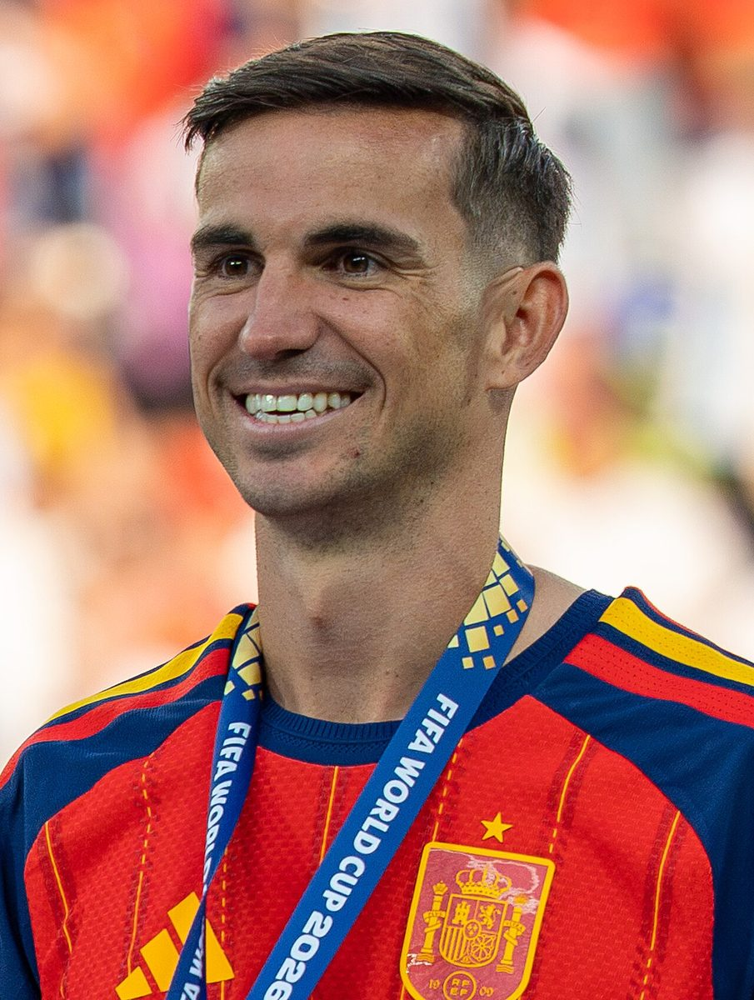

Четыре гола за 17 минут: ПСЖ разгромил «Вильярреал» 6:0, фавориты Лиги чемпионов отрываются
«Пари Сен-Жермен» и «Реал Мадрид» — единственные команды с четырьмя победами в четырёх матчах. Ближе всех к ним «Арсенал», «Комо» и «Барселона».

Бывают разгромы, а бывает то, что «Пари Сен-Жермен» устроил в Испании во вторник вечером.
На стадионе «Эстадио де ла Серамика» в Вильярреале ПСЖ вёл 4:0 уже к 17-й минуте. Жоау Невеш забил на девятой минуте, Дезире Дуэ — три минуты спустя, Сенни Маюлю — ещё через минуту, а Фабиан Руис — на 17-й. После перерыва Руис оформил дубль, а Давид Боли за двенадцать минут до конца установил окончательный счёт — 6:0.
Цифры говорят о том же. У ПСЖ 71% владения мячом и 12 ударов в створ. Вратарь «Вильярреала» сделал шесть сейвов — и всё равно пропустил шесть мячей.

Две команды без потерь
После четырёх туров только два клуба выиграли все матчи: ПСЖ и «Реал Мадрид». У обоих по 12 очков, ПСЖ лидирует по разнице мячей (+15).
Четвёртая победа далась «Реалу» намного тяжелее. В среду в Афинах АЕК дважды выходил вперёд. Джуд Беллингем отыграл первый гол, Килиан Мбаппе — второй, а Федерико Вальверде забил победный мяч в компенсированное время — 3:2.
Следом идут «Арсенал» с 10 очками, затем «Комо» с 9 очками после невероятной победы над «Лансом» со счётом 9:1 и «Барселона» — тоже 9 очков после победы над «Астон Виллой» 3:0.

Два способа побеждать
Игра ПСЖ строилась на интенсивности и контроле. Молодые полузащитники и нападающие с первых минут прессинговали высоко, а команда отдала 91% точных передач. У «Вильярреала» так и не появилось шанса прийти в себя.
«Реал» побеждает иначе. Он не всегда доминирует, но находит способ выиграть, как это было в Афинах. Если сезон у обеих команд пойдёт по плану, они могут встретиться в самый решающий момент. После четырёх туров общего этапа именно они задали планку, к которой тянутся все остальные.